Imperial Japanese Navy
BATTLESHIP NAGATO
Super-dreadnought battleship
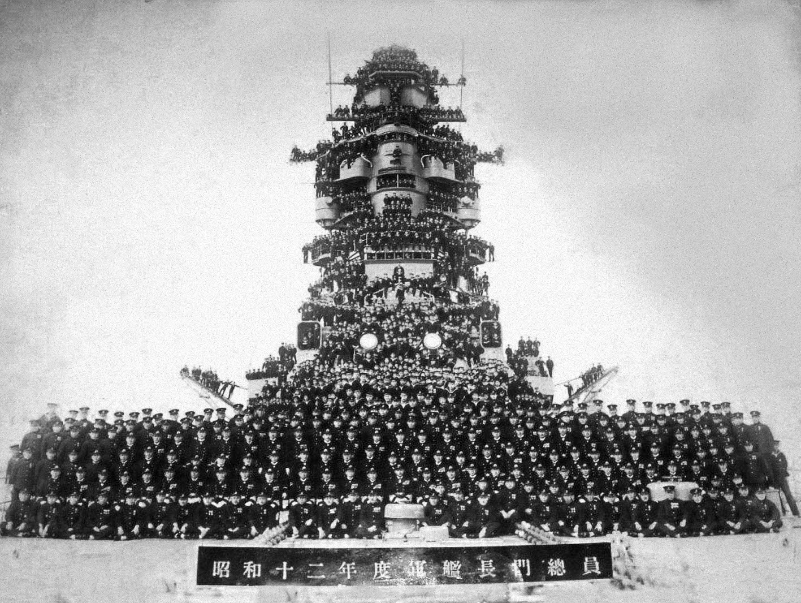
Brief History Summary
Nagato was a Japanese super-dreadnought battleship commissioned in 1920 and the lead ship of her class. She took part in the Second Sino-Japanese War in 1937 and later served as Admiral Isoroku Yamamoto's flagship during the attack on Pearl Harbor. Between 1934 and 1936, the Navy modernized her armor and rebuilt much of her superstructure.
During the Pacific War, Nagato spent much of her time training in Japanese territorial waters. Her first major wartime action came in 1944, when American aircraft attacked her during the Battle of the Philippine Sea. She was the only Japanese capital ship to survive the war. Afterward, the United States used her as a target during the nuclear tests of Operation Crossroads, and she sank during the second test.
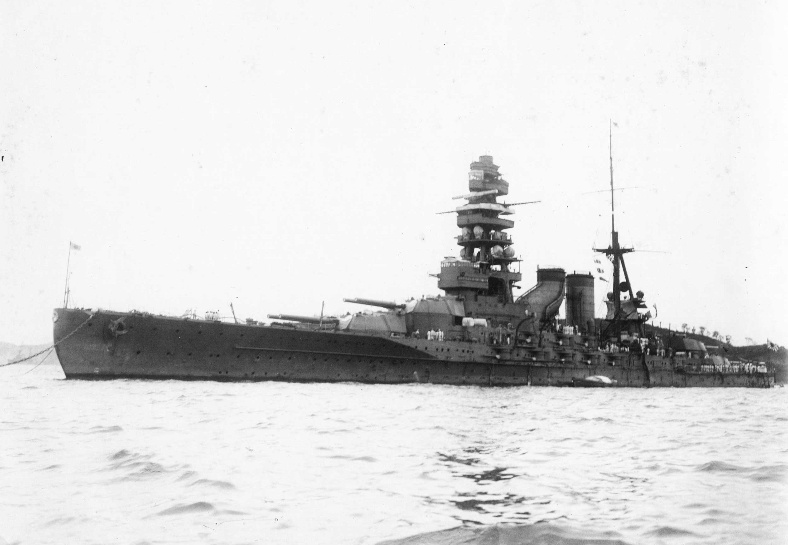
Ship Description
Nagato measured 201.17 meters (600 ft) between perpendiculars and 215.8 meters overall. Her beam was 29.02 meters and her draft was 9.08 meters. She displaced 32,720 metric tons at standard load and 39,116 metric tons at full load. Her original crew numbered 1,333 sailors, rising to 1,734 by 1944. In 1930, the Navy modified her bow to reduce spray when she steamed into a head sea. This lengthened the ship by 1.59 meters (5 ft 3 in). Her 1934 to 1936 reconstruction added another 7.55 meters (24.8 ft), improved her speed, and fitted torpedo bulges for better underwater protection and to offset the weight of her additional armor.
Propulsion
Four Gihon steam turbines powered Nagato, with each turbine driving one propeller shaft. Twenty-one Kampon water-tube boilers supplied the steam and produced 80,000 shp (60,000 kW). Fifteen boilers burned oil, while the remaining boilers used a mixture of coal and oil. This system gave her a range of 5,500 nautical miles at 16 knots.
Funnel smoke reportedly choked and blinded the bridge crew in 1922. The Navy first fitted a fingernail-shaped deflector to redirect the smoke, but it did not solve the problem. In 1924, the forward funnel was rebuilt with a serpentine shape. The funnel was removed in 1930 when the boilers were replaced with ten oil-fired Kampon boilers. The changes also freed space for extra fuel in the torpedo bulges, increasing her range to 8,560 nautical miles at 16 knots.
Armament
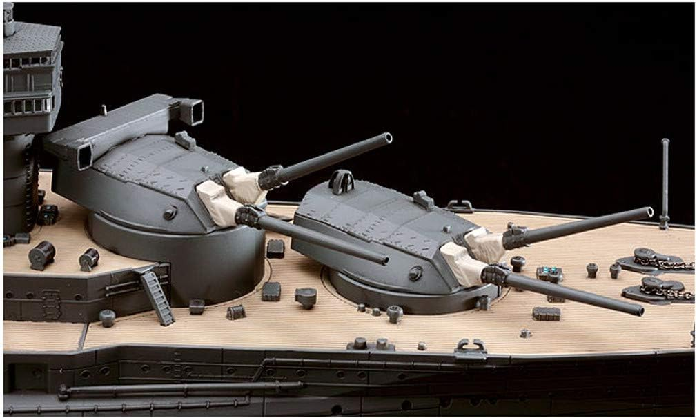
Nagato's main battery consisted of eight 45-caliber 41 cm (16.1 in) Type 3 naval guns. The guns sat in four hydraulically powered twin turrets, arranged in superfiring pairs at the front and rear of the ship. The turrets were numbered from front to back and originally allowed the guns to elevate from −2 to +35 degrees. They could fire about two rounds per minute. In the mid-1930s, the original turrets were replaced with modified turrets from the unfinished Tosa-class battleships. Their elevation range increased to −3 to +43 degrees, extending the guns' maximum range from 30,200 to 37,900 meters (33,000 to 41,400 yd).
By World War II, the guns fired Type 91 armor-piercing capped shells weighing 1,020 kilograms (2,250 lb), with a muzzle velocity of 780 meters per second (2,600 ft/s). They could also fire a 936-kilogram (2,064 lb) high-explosive shell at 805 meters per second (2,640 ft/s). The Navy developed the Type 3 Sankaidan incendiary shrapnel shell in the 1930s for use against aircraft.
Twenty 50-caliber 14 cm (5.5 in) Type 3 naval guns formed the secondary battery. They were mounted in casemates along the upper hull and in the superstructure. The superstructure guns could elevate to +20 degrees, while the hull guns could reach +25 degrees, giving them ranges of 15,800 meters (17,300 yd) and 17,000 meters (19,000 yd). Each gun fired a 38-kilogram (84 lb) high-explosive shell at up to 10 rounds per minute. Anti-aircraft defense initially came from four single-mounted 40-caliber Type 3 3-inch guns. These 76 mm guns could elevate to +75 degrees and fire 13 to 20 rounds per minute. Their 6 kg (13 lb) projectiles left the barrels at 680 m/s (2,200 ft/s) and could reach 7,500 meters (24,600 ft). Nagato also carried eight 53.3-centimeter (21 in) torpedo tubes, with two above-water and two submerged tubes on each side. They fired Type 6 torpedoes with 203-kilogram (448 lb) Shimose warheads. The torpedoes could be set for 15,500 meters (17,000 yd) at 26 knots, 10,000 meters (11,000 yd) at 32 knots, or 7,000 meters (7,700 yd) at 37 knots.
Around 1926, the four above-water torpedo tubes were removed and three additional 76 mm anti-aircraft guns were placed around the foremast. In 1932, these guns were replaced by eight 40-caliber 12.7 cm Type 89 dual-purpose guns in four twin mounts on the forward and rear superstructures. They could engage surface targets out to 14,700 meters (16,100 yd), with a maximum rate of 14 rounds per minute and a sustained rate of about eight. Two twin mounts of license-built Vickers 2-pounder light anti-aircraft guns were also added. Each could fire 200 rounds per minute.
During the 1934 to 1936 reconstruction, the remaining torpedo tubes and the two forward 14 cm guns were removed. The remaining 14 cm guns received increased elevation to +35 degrees, raising their range to 20,000 meters (22,000 yd). The Navy also added an unknown number of license-built 13.2 mm Hotchkiss machine guns in twin mounts. Their maximum range was 6,500 meters (7,100 yd), although their effective range against aircraft was only 700 to 1,500 meters (770 to 1,640 yd). Their cyclic rate was 425 to 475 rounds per minute, but changing the 30-round magazines reduced the effective rate to 250 rounds per minute.
In 1939, the 2-pounders were replaced by 20 license-built Hotchkiss Type 96 25 mm light anti-aircraft guns in twin and single mounts. The Type 96 was Japan's standard light anti-aircraft gun during World War II, but its performance was limited by slow training and elevation, inadequate sights, vibration, small magazines, and heavy muzzle blast. The guns had an effective range of 1,500 to 3,000 meters (1,600 to 3,300 yd) and an effective rate of only 110 to 120 rounds per minute because their 15-round magazines needed frequent changes. Nagato received more 25 mm guns during the war. On July 10, 1944, she was reported to carry 98, and another 30 were added during a November refit at Yokosuka. Two additional twin 127 mm mounts were fitted beside the funnel at the same time, while all of the 14 cm guns were removed, leaving Nagato heavily configured for anti-aircraft defense.
Armor
Nagato's waterline armor belt was 305 mm (12 in) thick at its upper edge and tapered to 100 mm (3.9 in) at the bottom. A 229 mm (9.0 in) armor section sat above the belt. The main deck was 69 mm (2.7 in) thick, while the lower deck was 75 mm (3 in). Her turrets had 305 mm of armor on their faces, 230–190 mm (9.1–7.5 in) on their sides, and 152–127 mm (6.0–5.0 in) on their roofs. The barbettes had 305 mm of armor, the 140 mm gun casemates had 25 mm (0.98 in), and the conning tower sides had 369 mm (14.5 in).
During reconstruction, Nagato received more heavily armored 41 cm turrets. Their face armor increased to 460 mm (18.1 in), the sides to 280 mm (11.0 in), and the roofs to 250–230 mm (9.8–9.1 in). Armor over the machinery and magazines was also increased by 38 mm on the upper deck and 25 mm (0.98 in) on the upper armored deck. These changes brought the ship's armor weight to 13,032 metric tons (12,826 long tons), or 32.6 percent of her displacement. In early 1941, her barbette armor was reinforced with 100 mm (3.9 in) plates above the main deck and 215 mm (8.5 in) plates below it.
Fire Control and Sensors
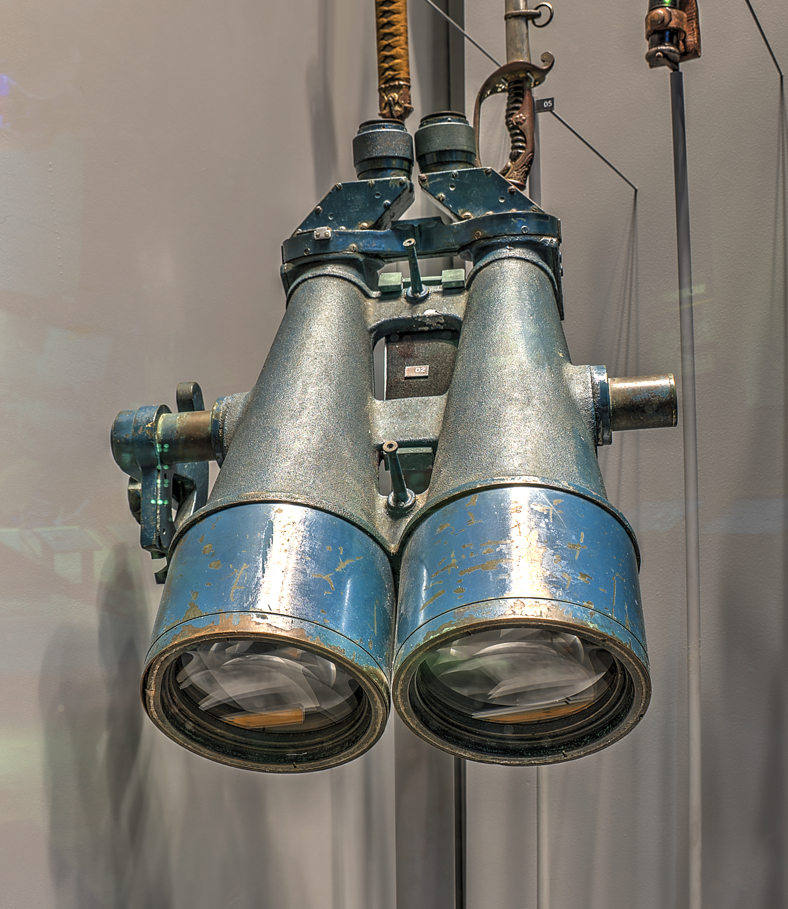
When completed in 1920, Nagato had a 10-meter (32 ft 10 in) rangefinder in her forward superstructure. Six-meter (19 ft 8 in) and three-meter (9 ft 10 in) anti-aircraft rangefinders were added in 1921 and 1923. The rangefinders on the second and third turrets were replaced with 10-meter units in 1932–1933.
Nagato first used a Type 13 fire-control system based on Vickers equipment supplied during World War I. It was replaced by an improved Type 14 system around 1925. The system controlled the main and secondary guns, but anti-aircraft fire was not covered until the Type 31 director was introduced in 1932. A modified Type 14 system tested in 1935 became the Type 34. The Type 94 director, introduced in 1937, controlled the 127 mm anti-aircraft guns, while the 25 mm Type 96 guns used the Type 95 director. It is not known exactly when Nagato received the Type 94 director.
In May 1943, while in drydock, Nagato received a Type 21 air-search radar on top of the pagoda mast. On 27 June 1944, two Type 22 surface-search radars were added to the pagoda mast, along with two Type 13 early-warning radars on the mainmast.
Aircraft
In August 1925, Nagato received an 18-meter (59 ft 1 in) platform for launching aircraft from Turret No. 2. Yokosuka Ro-go Ko-gata and Heinkel HD 25 floatplanes were tested from it, but the platform was removed early the next year. In 1926, a boom was added to the mainmast to handle the Yokosuka E1Y assigned to the ship, and a Hansa-Brandenburg W.33 floatplane was also tested aboard.
A catapult was installed between the mainmast and Turret No. 3 in mid-1933. A folding crane was added on the port side, allowing Nagato to operate two or three floatplanes, though she had no hangar. Nakajima E4N2 biplanes served aboard until they were replaced by Nakajima E8N2 biplanes in 1938. A stronger catapult was installed in November 1938 for heavier aircraft, including the Kawanishi E7K added in 1939–1940. Mitsubishi F1M biplanes replaced the E8Ns on 11 February 1943.
Construction and Career
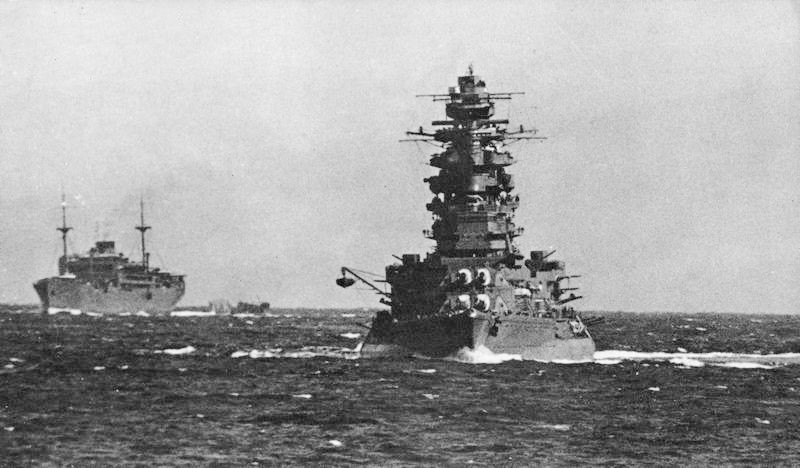
Nagato, named for Nagato Province, was ordered on 12 May 1916 and laid down at Kure Naval Arsenal on 28 August 1917 as the lead ship of her class. Admiral Katō Tomosaburō launched her on 9 November 1919. She was completed on 15 November 1920 and commissioned ten days later under Captain Nobutaro Iida. Assigned to the 1st Battleship Division, she became the flagship of Rear Admiral Sōjirō Tochinai.
Crown Prince Hirohito inspected the ship on 13 February 1921. Nagato later hosted Marshal Joseph Joffre and Edward, Prince of Wales, who visited Japan with Lieutenant Louis Mountbatten. After the Great Kantō earthquake in 1923, the ship carried supplies from Kyushu to the victims. In 1924, Nagato and her sister ship Mutsu sank the obsolete battleship Satsuma during gunnery practice, as required by the Washington Naval Treaty.
Nagato entered reserve service in December 1924 and became a gunnery training ship. Aircraft handling and take-off tests were held aboard in August 1925. She became the flagship of the Combined Fleet that December and remained active through the late 1920s.
Nagato returned to reserve service in December 1931, received upgraded anti-aircraft weapons the following year, and took part in fleet maneuvers north of the Marshall Islands in 1933. Her first modernization began in April 1934 and was completed in January 1936. During the attempted coup in February 1936, she was deployed in Tokyo Bay and some of her sailors went ashore to support the government. In August, she transported troops from Shikoku to Shanghai during the Second Sino-Japanese War, and her floatplanes bombed targets there.
Nagato became a training ship again in December 1937, then resumed service as the Combined Fleet flagship in December 1938. She took part in the Imperial Fleet Review in October 1940 and was refitted in early 1941 in preparation for war.
World War II
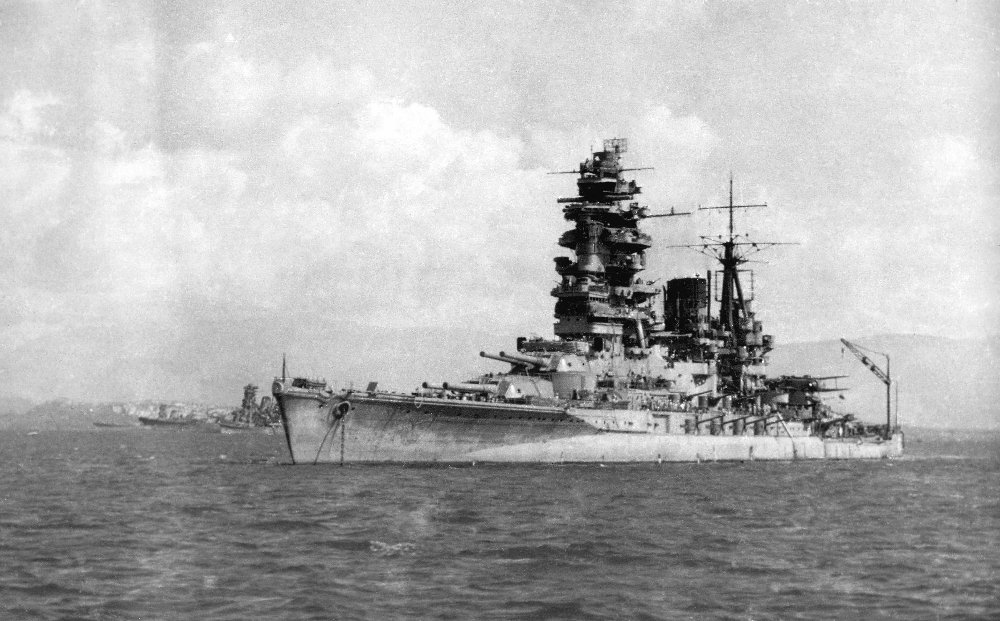
On 2 December 1941, Admiral Isoroku Yamamoto sent the code phrase “Niitaka yama nobore” (“Climb Mount Niitaka”) from Nagato at anchor in Hashirajima, authorizing the 1st Air Fleet to proceed with the attack on Pearl Harbor. When Japan entered the war on 8 December, Nagato sortied for the Bonin Islands with Mutsu and other major warships, providing distant cover for the fleet returning from Pearl Harbor. Yamamoto transferred his flag to Yamato on 12 February 1942, and Nagato received a brief refit at Kure from March to April.
During the Battle of Midway in June 1942, Nagato served with the Main Body of the 1st Fleet alongside Yamato, Mutsu, Hōshō, Sendai, and several destroyers and auxiliary ships. After Japan lost its four fleet carriers, the force attempted to draw the American fleet into range, but the Americans withdrew and Nagato saw no action. Survivors from Kaga were later transferred to the ship. Nagato became the flagship of the 1st Fleet in July and continued training in Japanese waters until August 1943.
In August 1943, Nagato, Yamato, Fusō, and the escort carrier Taiyō transferred to Truk in the Caroline Islands. The fleet made two sorties to Eniwetok in September and October in response to suspected American attacks, but found no enemy forces and returned to Truk. Nagato remained there until December, when Captain Yuji Kobe replaced Captain Mikio Hayakawa.
Nagato left Truk with Fusō on 1 February 1944 to avoid an American air raid and reached Palau four days later. After departing Palau on 16 February, the ships arrived at Lingga Island near Singapore on 21 February. Nagato became the flagship of Battleship Division 1 under Vice Admiral Matome Ugaki and trained at Lingga, apart from a short refit at Singapore, until May. The division then transferred to Tawi-Tawi and joined Vice Admiral Jisaburō Ozawa’s 1st Mobile Fleet.
In June, Battleship Division 1 sailed toward Batjan for Operation Kon, a planned counterattack against the American invasion of Biak. The operation was canceled after American attacks on Saipan, and the force was redirected to the Mariana Islands. During the Battle of the Philippine Sea, Nagato escorted Jun’yō, Hiyō, and Ryūhō. She fired incendiary anti-aircraft shells at aircraft attacking Jun’yō, rescued survivors from Hiyō, and escaped the battle with only minor damage. Afterward, she was refitted at Kure with additional radar and anti-aircraft guns. Nagato then transported troops from Kure to Okinawa before returning to Lingga via Manila in July.
Battle of Leyte Gulf
.jpg)
Captain Yuji Kobe was promoted to rear admiral on 15 October 1944. Three days later, Nagato sailed for Brunei Bay to join the main Japanese fleet for Operation Sho-1, the planned counterattack against the American landings at Leyte. The Japanese intended Ozawa’s carrier force to lure the American carriers north, allowing Vice Admiral Takeo Kurita’s Center Force to enter Leyte Gulf and attack the invasion fleet. Nagato departed Brunei with Kurita’s force on 22 October.
On 24 October, during the Battle of the Sibuyan Sea, Nagato came under repeated attacks by American dive-bombers and fighters. She was hit by two bombs from aircraft belonging to the carriers Franklin and Cabot. One bomb disabled five casemate guns, jammed a 127 mm gun mount, and damaged the air intake of No. 1 boiler room, temporarily stopping one propeller shaft. The two bombs killed 52 crewmen; the number of wounded is unknown.
On 25 October, Kurita’s force passed through San Bernardino Strait and entered the Battle off Samar. Nagato fired on the escort carriers and screening ships of Task Group 77.4.3, known as Taffy 3, but poor visibility from rain and smoke screens made her fire ineffective. Torpedoes fired by the destroyer USS Heermann forced Nagato and Yamato away from the action while they maneuvered to avoid them. Nagato later claimed to have damaged a cruiser, but the Japanese force broke off the engagement and retreated under heavy air attack.
Nagato was hit by two bombs in the bow during the retreat, but the damage was minor. Four gunners were swept overboard while the ship turned sharply to avoid dive-bombers, but rescuers could not find them. The fleet reached Brunei on 26 October after repeated air attacks. Over the final two days, Nagato fired 99 410 mm shells and 653 14 cm shells. She suffered 38 crewmen killed and 105 wounded.
Final Days of the War
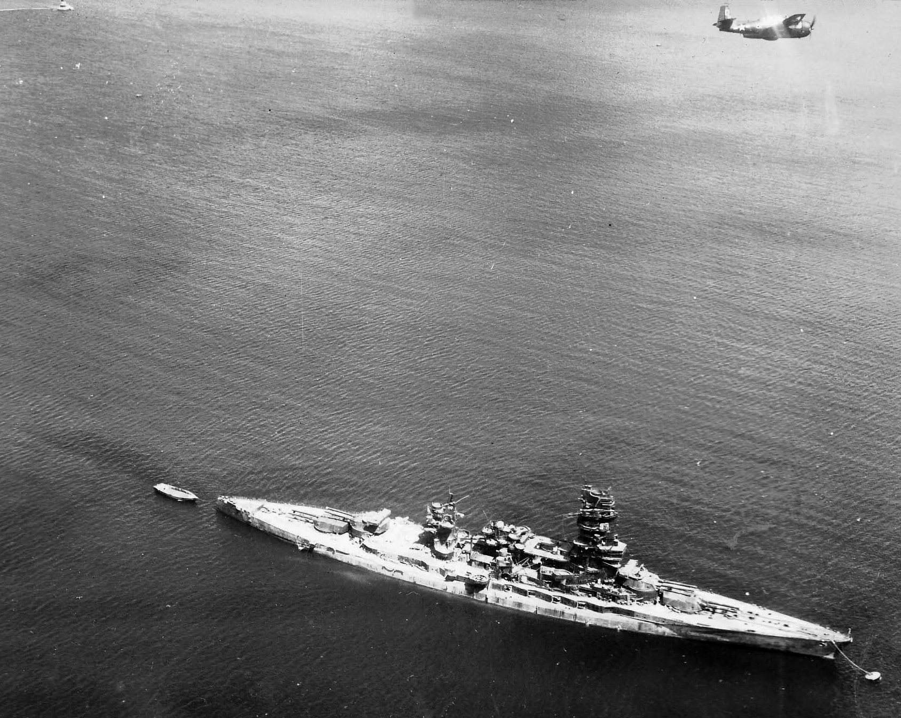
On 15 November 1944, Nagato was assigned to Battleship Division 3 of the 2nd Fleet. After an air attack on Brunei the next day, Nagato, Yamato, and the fast battleship Kongō left for Kure. On 21 November, Kongō and one of the escorting destroyers were sunk by the submarine USS Sealion. Nagato reached Yokosuka on 25 November for repairs, but fuel and material shortages prevented her from returning to active service.
Nagato was converted into a floating anti-aircraft battery. Her funnel and mainmast were removed to improve the firing arcs of her anti-aircraft guns, which were reinforced with additional mounts. Her forward secondary guns were removed, and Captain Kiyomi Shibuya replaced Captain Kobe in command. Battleship Division 3 was disbanded in January 1945, and Nagato was reassigned to the Yokosuka Naval District as a coastal defense ship. Moored beside a pier, she relied on a shore-based boiler and a converted submarine chaser for heat, cooking, steam, and electricity. Her anti-aircraft guns lacked full power and were only partly operational. Nagato entered reserve service in April, and retired Rear Admiral Miki Otsuka assumed command.
In June 1945, the remaining secondary guns, about half of the anti-aircraft weapons, rangefinders, and searchlights were removed and placed ashore. On 18 July, American aircraft attacked Nagato while targeting Japan’s last surviving capital ships. Two 500-pound bombs struck the ship. The first hit the bridge and killed Otsuka, the executive officer, and twelve sailors. The second struck the deck near the No. 3 barbette, killing 21 men and damaging four anti-aircraft guns. A rocket also hit the stern without causing serious damage. The crew left the damage unrepaired and filled ballast tanks with seawater to make the ship appear more heavily damaged.
Captain Shuichi Sugino was appointed in July, but retired Rear Admiral Masamichi Ikeguchi served as interim captain until Sugino arrived on 20 August. On the night of 1–2 August, a false alarm led the crew to prepare Nagato for an attack on a supposed convoy in Sagami Bay. After Japan’s surrender, sailors from USS Iowa, Underwater Demolition Team 18, and the high-speed transport USS Horace A. Bass secured the ship on 30 August. Captain Thomas J. Flynn, executive officer of Iowa, assumed command. Nagato was the only Japanese battleship still afloat when the war ended, and she was removed from the Navy List on 15 September 1945.
After the War
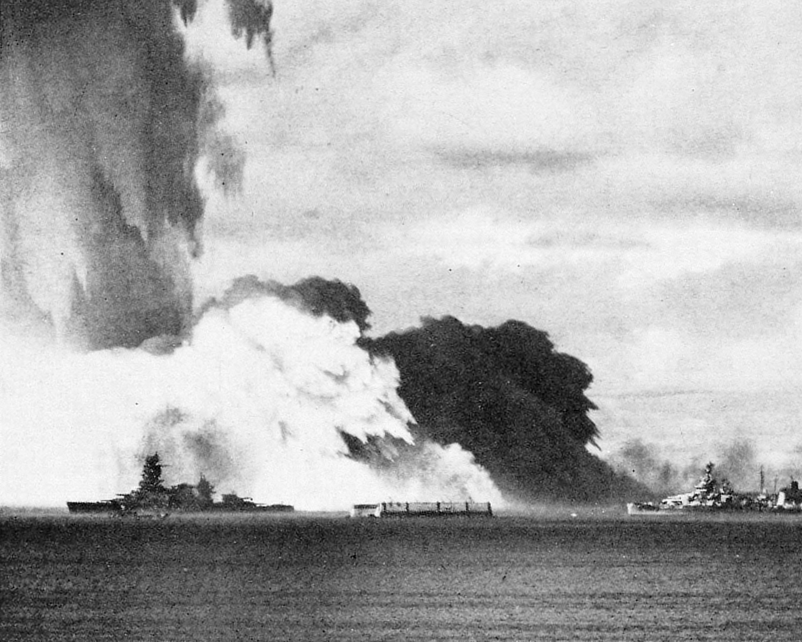
Nagato was selected as a target ship for Operation Crossroads, a series of nuclear tests at Bikini Atoll in 1946. In March, she left Yokosuka for Eniwetok under Captain W. J. Whipple, carrying an American crew of about 180 men alongside her Japanese crew. With only two working propeller shafts, the ship could make about 10 knots. Her wartime underwater damage had not been repaired, and leaks overwhelmed her pumps. When the light cruiser Sakawa broke down on 28 March, Nagato tried to tow her, but a boiler failed and the ship ran out of fuel in rough weather. She developed a seven-degree port list before tugs arrived from Eniwetok on 30 March. After temporary repairs, she reached Eniwetok under tow on 4 April and later made 13 knots on the voyage to Bikini.
Operation Crossroads began with Test Able, an airburst on 1 July. Nagato was 1,500 meters from the blast and suffered only light damage. A skeleton crew later operated one of her boilers for 36 hours while preparing for Test Baker on 25 July. For the underwater explosion, the ship was positioned 870 meters from ground zero. She survived the resulting tsunami with little visible damage, developing a two-degree starboard list. A full inspection was impossible because of dangerous radiation. Her list gradually increased, and Nagato capsized and sank during the night of 29–30 July.
The wreck rests upside down at a depth of about 33.5 meters. Her four propellers are among the most prominent features. In recent years, Nagato has become a popular scuba-diving site and was listed by The Times as one of the world’s top ten wreck-diving destinations in 2007.

A 3D render of Battleship Nagato in her 1944 configuration
| History | |
|---|---|
| Ship Name | Nagato (after the Nagato Province) |
| Shipyard Builder | Kure Naval Arsenal |
| Laid Down | August 28, 1917 |
| Completed | November 15, 1920 |
| Commissioned | November 25, 1920 |
| Sunken | September 15, 1945 |
| Fate | Sunken as result of Nuclear Trials during Operation Crossroads |
| Initial Technical Specifics | |
|---|---|
| Class + Type | Nagato Class Battleship |
| Displacement | 32,720 metric tons (32,200 long tons) |
| Length | 215.8 m (708 ft) |
| Beam | 29.02 m (95 ft 3 in) |
| Draft | 9.08 m (29 ft 9 in) |
| Installed Power | 21 x Kampon Water-tube Boilers |
| Propulsion | 4 x Gihon geared Steam Turbines |
| Speed | 26.5 knots (49.1 km/h; 30.5 mph) |
| Range | 5,500 nmi @ 16 knots (10,200 km @ 30 km/h) |
| Crew Complement | 1,333 Sailors |
| Armament | 4 x Twin Mount 41 cm (16 in) Guns 20 x Single Mount 14 cm (5.5 in) Guns 4 x Single Mount 76 mm (3 in) AA Guns 8 x 533 mm (21 in) Torpedo Tubes |
| Armour | Waterline Belt: 100-305 mm (3.9-12.0 in) Deck: 69mm (2.7 in) + 75 mm (3 in) Gun Turrets: 190-356 mm (7.5-14.0 in) Barbettes: 305 mm (12.0 in) Conning Tower: 369 mm (14.5 in) |
| 1944 Technical Specifics | |
|---|---|
| Class + Type | Nagato Class Battleship |
| Displacement | 39,130 metric tons (38,510 long tons) |
| Length | 224.94 m (738 ft) |
| Beam | 34.6 m (113 ft 6 in) |
| Draft | 9.49 m (31 ft 2 in) |
| Installed Power | 10 x Kampon Water-tube Boilers |
| Propulsion | 4 x Gihon geared Steam Turbines |
| Speed | 25 knots (46 km/h; 29 mph) |
| Range | 8,650 nmi @ 16 knots (16,020 km @ 30 km/h) |
| Crew Complement | 1,734 Sailors |
| Sensors and Processing Systems | 1 x Type 21 Air Search Radar 2 x Type 13 Early Warning Radars 2 x Type 22 Surface Search Radars |
| Armament | 4 x Twin Mount 41 cm (16 in) Guns 18 x Single Mount 14 cm (5.5 in) Guns 4 x Twin Mount 127 mm (5 in) DP Guns 98 x 25 mm (1 in) AA Guns |
| Armour | Waterline Belt: 100-305 mm (3.9-12.0 in) Deck: 69mm (2.7 in) + 100 mm (3.9 in) + 38 mm (1.5 in) Gun Turrets: 280-460 mm (11.0-18.1 in) Barbettes: 457 mm (18.0 in) Conning Tower: 369 mm (14.5 in) |
| Aircraft Complement | 3 x Mitsubishi F1M Biplanes |
| Miscellaneous | 1 x Aircraft Catapult |
Timeline
- Laid down at Kure Naval Arsenal.
- Completed and commissioned.
- Underwent major modernization.
- Signaled the Pearl Harbor operation from Hashirajima.
- Fought in the Battle off Samar during the Leyte Gulf campaign.
- Struck by American aircraft at Yokosuka.
- Sank during Operation Crossroads at Bikini Atoll.
Gallery
{kind=link}
{kind=link}
{kind=link}
{kind=link}
{kind=link}
{kind=link}
{kind=link}
{kind=link}
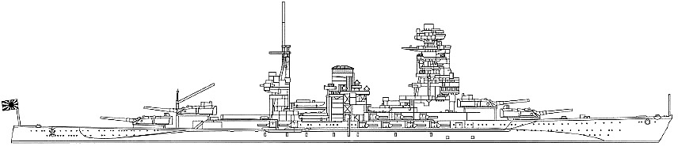
{kind=link}
{kind=link}
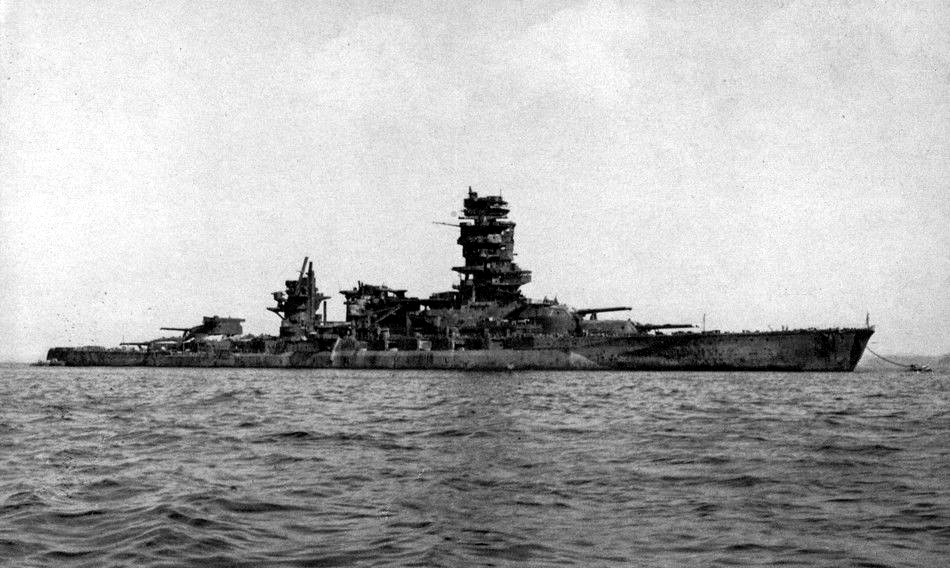

{kind=link}
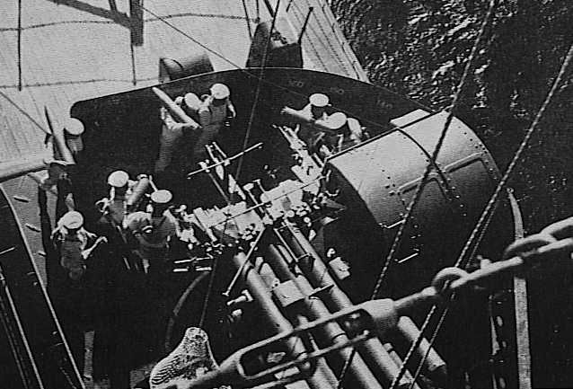
{kind=link}
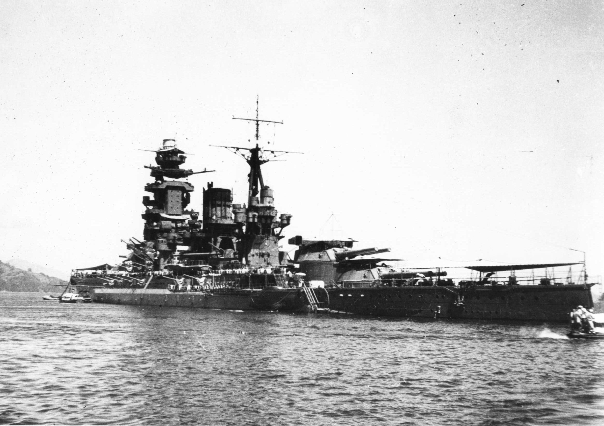
{kind=link}
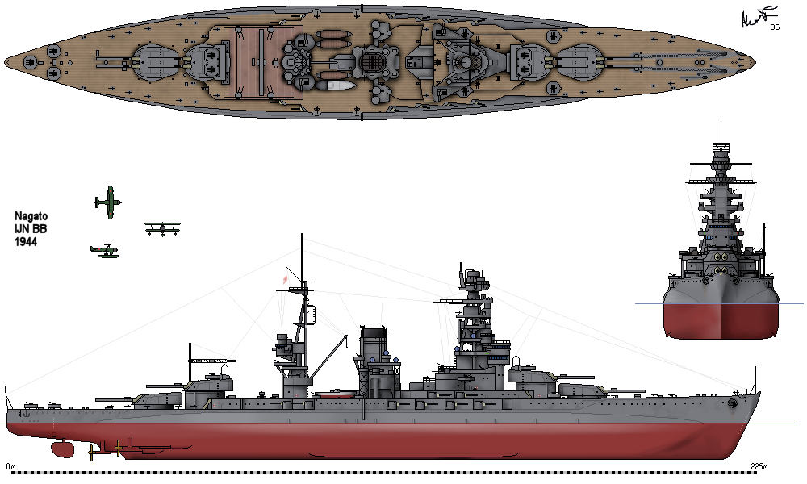
{kind=link}
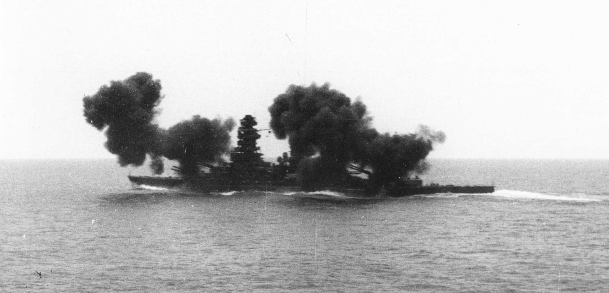
{kind=link}
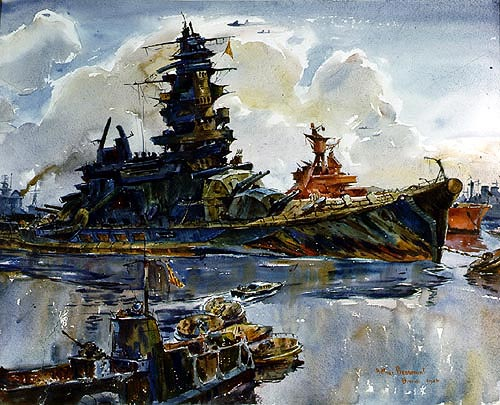
{kind=link}
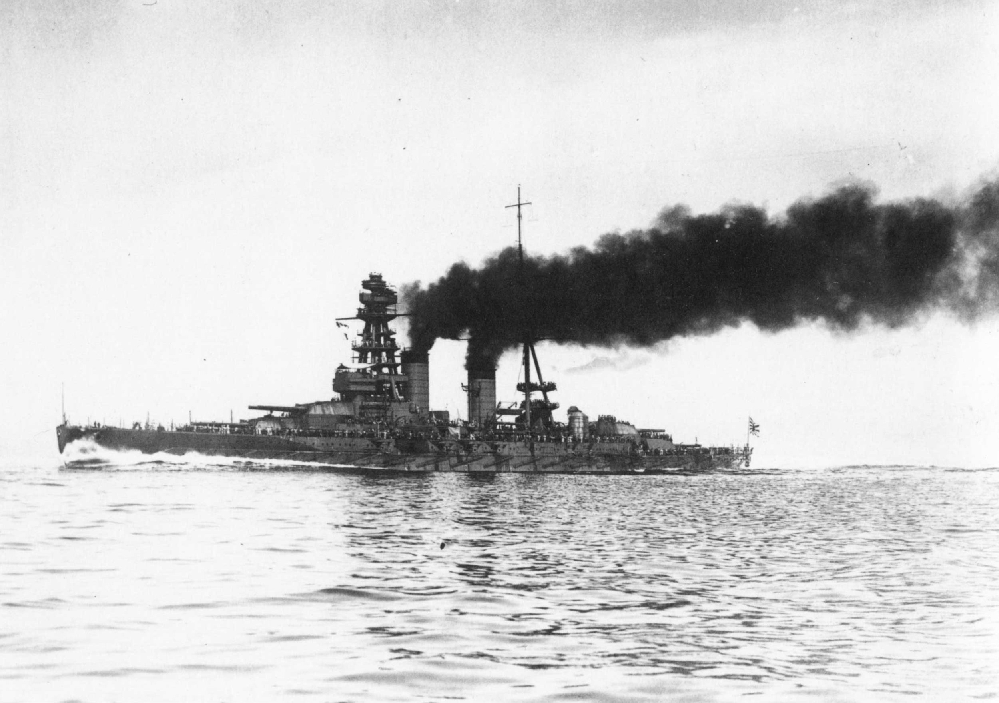
{kind=link}
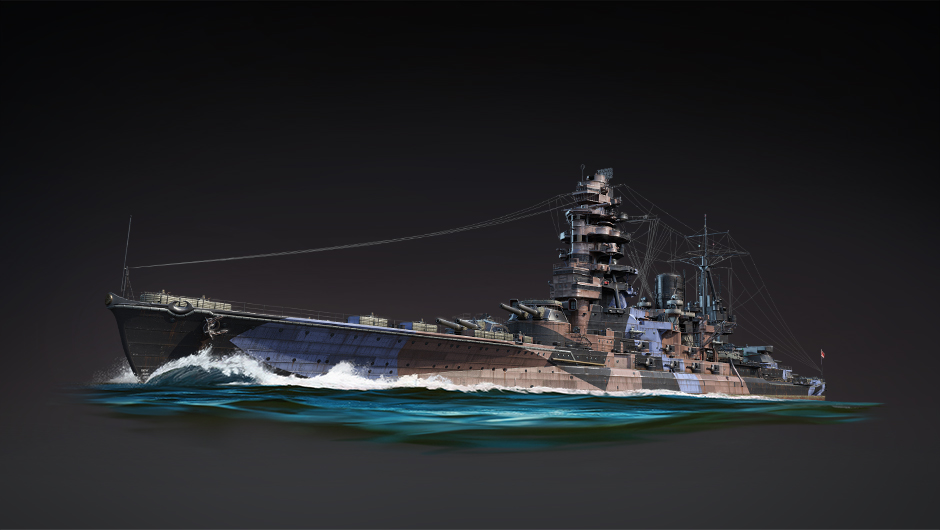
{kind=link}
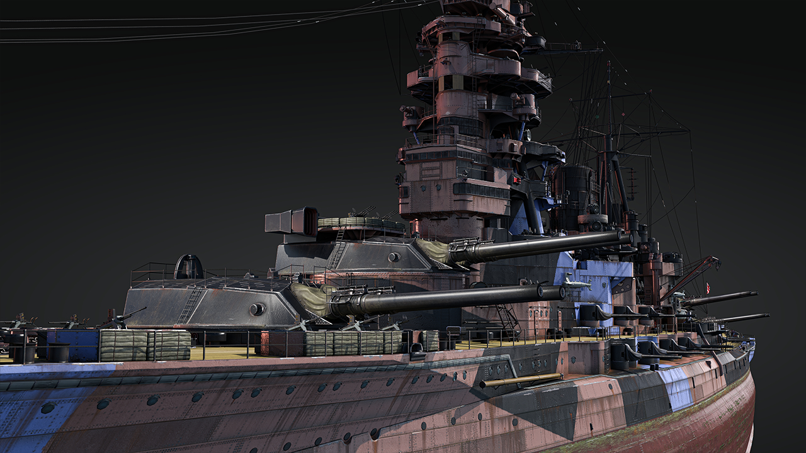
{kind=link}
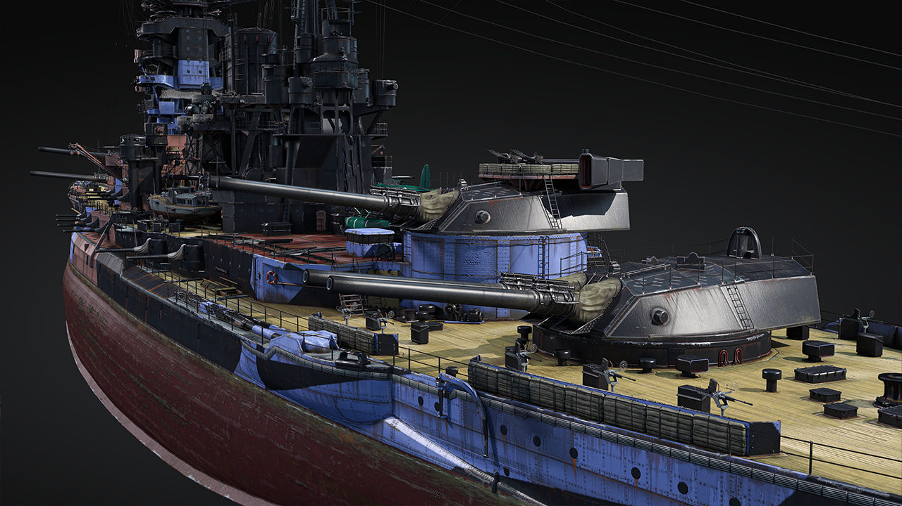
{kind=link}
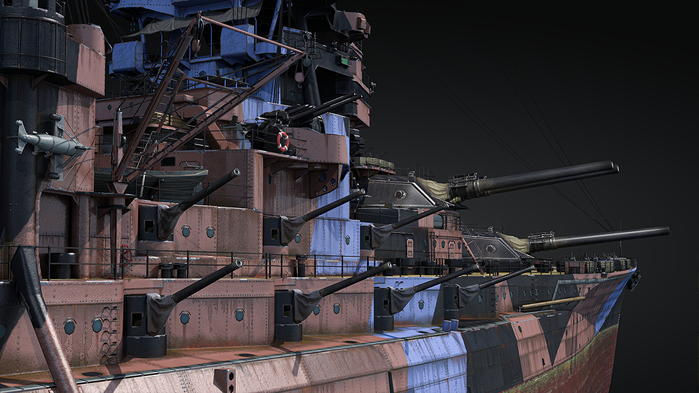
{kind=link}
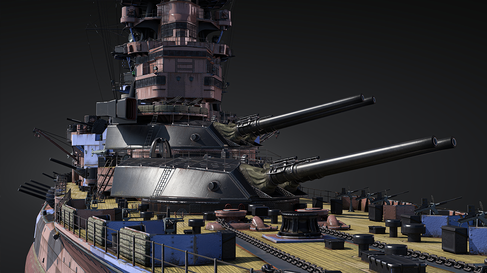
{kind=link}
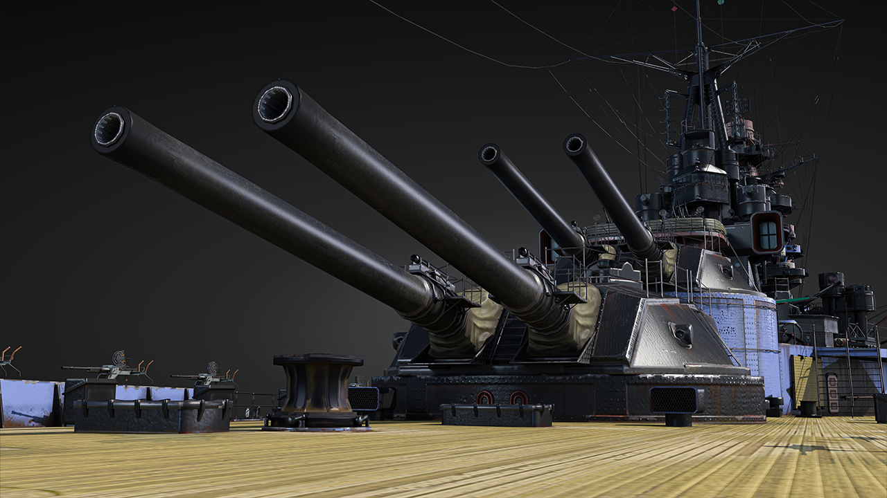
{kind=link}
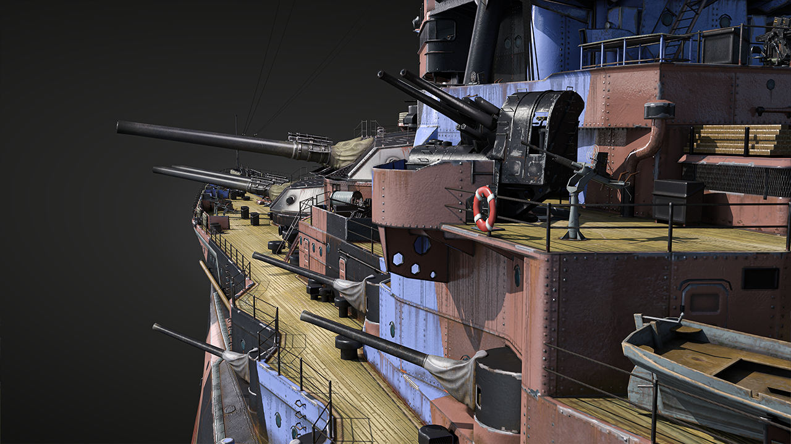
{kind=link}
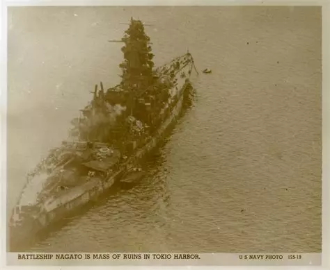
{kind=link}
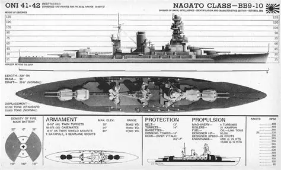
{kind=link}
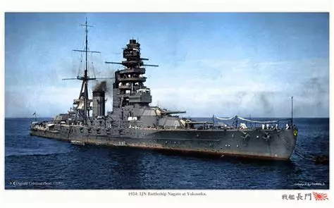
{kind=link}
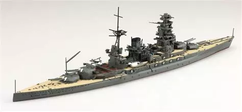
Video
Video footage from War Thunder, developed by Gaijin Entertainment.
Sources: This profile was prepared primarily from Wikipedia, with additional reference material from Wargaming and War Thunder. These sources were used as starting points and cross-referenced where possible. Game references may simplify or interpret historical details, so they are treated as supplementary rather than authoritative sources. The information is intended to be mostly accurate, but I am an amateur researcher and some details may contain errors. Contributors with relevant knowledge are welcome to suggest corrections and help improve the accuracy of this profile.